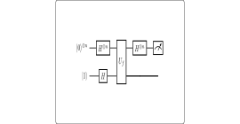

<!DOCTYPE html>
<html xmlns="http://www.w3.org/1999/xhtml">
<head>
  <meta charset="utf-8" />
  <meta name="generator" content="pandoc 3.10.2" />
  <meta name="viewport" content="width=device-width, initial-scale=1.0, user-scalable=yes" />
  <meta name="author" content="QuoNic" />
  <title>bernstein_vazirani</title>
  <style>
    /* Default styles provided by pandoc.
    ** See https://pandoc.org/MANUAL.html#variables-for-html for config info.
    */
    html {
      color: #1a1a1a;
      background-color: #fdfdfd;
    }
    body {
      margin: 0 auto;
      max-width: 36em;
      padding-left: 50px;
      padding-right: 50px;
      padding-top: 50px;
      padding-bottom: 50px;
      hyphens: auto;
      overflow-wrap: break-word;
      text-rendering: optimizeLegibility;
      font-kerning: normal;
    }
    @media (max-width: 600px) {
      body {
        font-size: 0.9em;
        padding: 12px;
      }
      h1 {
        font-size: 1.8em;
      }
    }
    @media print {
      html {
        background-color: white;
      }
      body {
        background-color: transparent;
        color: black;
      }
      p, h2, h3 {
        orphans: 3;
        widows: 3;
      }
      h2, h3, h4 {
        page-break-after: avoid;
      }
    }
    p {
      margin: 1em 0;
    }
    a {
      color: #1a1a1a;
    }
    a:visited {
      color: #1a1a1a;
    }
    img {
      max-width: 100%;
    }
    svg {
      height: auto;
      max-width: 100%;
    }
    h1, h2, h3, h4, h5, h6 {
      margin-top: 1.4em;
    }
    h5, h6 {
      font-size: 1em;
      font-style: italic;
    }
    h6 {
      font-weight: normal;
    }
    ol, ul {
      padding-left: 1.7em;
      margin-top: 1em;
    }
    li > ol, li > ul {
      margin-top: 0;
    }
    blockquote {
      margin: 1em 0 1em 1.7em;
      padding-left: 1em;
      border-left: 2px solid #e6e6e6;
      color: #606060;
    }
    code {
      white-space: pre-wrap;
      font-family: Menlo, Monaco, Consolas, 'Lucida Console', monospace;
      font-size: 85%;
      margin: 0;
      hyphens: manual;
    }
    pre {
      margin: 1em 0;
      overflow: auto;
    }
    pre code {
      padding: 0;
      overflow: visible;
      overflow-wrap: normal;
    }
    .sourceCode {
     background-color: transparent;
     overflow: visible;
    }
    hr {
      border: none;
      border-top: 1px solid #1a1a1a;
      height: 1px;
      margin: 1em 0;
    }
    table {
      margin: 1em 0;
      border-collapse: collapse;
      width: 100%;
      overflow-x: auto;
      display: block;
      font-variant-numeric: lining-nums tabular-nums;
    }
    table caption {
      margin-bottom: 0.75em;
    }
    tbody {
      margin-top: 0.5em;
      border-top: 1px solid #1a1a1a;
      border-bottom: 1px solid #1a1a1a;
    }
    th {
      border-top: 1px solid #1a1a1a;
      padding: 0.25em 0.5em 0.25em 0.5em;
    }
    td {
      padding: 0.125em 0.5em 0.25em 0.5em;
    }
    header {
      margin-bottom: 4em;
      text-align: center;
    }
    #TOC li {
      list-style: none;
    }
    #TOC ul {
      padding-left: 1.3em;
    }
    #TOC > ul {
      padding-left: 0;
    }
    #TOC a:not(:hover) {
      text-decoration: none;
    }
    span.smallcaps{font-variant: small-caps;}
    div.columns{display: flex; gap: 1.5em;}
    div.column{flex: auto;}
    @media screen {
    div.columns{gap: min(4vw, 1.5em);}
    div.column{overflow-x: auto;}
    }
    div.hanging-indent{margin-left: 1.5em; text-indent: -1.5em;}
    /* The extra [class] is a hack that increases specificity enough to
       override a similar rule in reveal.js */
    ul.task-list[class]{list-style: none;}
    ul.task-list li input[type="checkbox"] {
      font-size: inherit;
      width: 0.8em;
      margin: 0 0.8em 0.2em -1.6em;
      vertical-align: middle;
    }
  </style>
  <script defer="" src="" type="text/javascript"></script>
</head>
<body>
<header id="title-block-header">
<h1 class="title">bernstein_vazirani</h1>
<p class="author">QuoNic</p>
</header>
<div class="center">
<p><strong>Algorithms / 算法</strong> | 难度：中级 | 预计时间：10
分钟</p>
</div>
<h1 id="为什么需要">为什么需要？</h1>
<p>Bernstein-Vazirani 算法是 Deutsch-Jozsa
算法的推广，用于寻找隐藏的比特串。</p>
<h2 id="经典局限">经典局限</h2>
<p>̱</p>
<ul>
<li><p>经典算法需要 <span class="math inline">\(n\)</span>
次查询才能找到隐藏的比特串</p></li>
<li><p>每次查询只能获得 1 比特信息</p></li>
</ul>
<h2 id="量子优势">量子优势</h2>
<p>̱</p>
<ul>
<li><p>Bernstein-Vazirani 只需要 1 次查询</p></li>
<li><p>提供线性加速</p></li>
<li><p>是量子算法设计的范例</p></li>
</ul>
<h2 id="实际应用">实际应用</h2>
<p>̱</p>
<ul>
<li><p>量子算法教学</p></li>
<li><p>量子优势验证</p></li>
<li><p>量子计算理论</p></li>
</ul>
<h1 id="快速上手">快速上手</h1>
<pre style="python"><code>from quonic.algorithms import bernstein_vazirani

# Find hidden bit string
result = bernstein_vazirani(&quot;101&quot;, n_qubits=3)
print(f&quot;Hidden string: {result.hidden_string}&quot;)</code></pre>
<p><strong>预期输出</strong>：</p>
<pre><code>Hidden string: 101</code></pre>
<h1 id="原理详解">原理详解</h1>
<h2 id="电路图">电路图</h2>
<div class="center">
<p></p>
</div>
<h2 id="数学推导">数学推导</h2>
<p>Bernstein-Vazirani 算法寻找隐藏的比特串 <span
class="math inline">\(s\)</span>，使得 <span class="math inline">\(f(x)
= s \cdot x \mod 2\)</span>。</p>
<p><strong>Step 1: 初始化</strong> <span
class="math display">\[\begin{equation}
|\psi_0\rangle = |0\rangle^{\otimes n}|1\rangle
\end{equation}\]</span></p>
<p><strong>Step 2: Hadamard 门</strong> <span
class="math display">\[\begin{equation}
|\psi_1\rangle = \frac{1}{\sqrt{2^n}} \sum_{x=0}^{2^n-1} |x\rangle \cdot
\frac{|0\rangle - |1\rangle}{\sqrt{2}}
\end{equation}\]</span></p>
<p><strong>Step 3: Oracle 查询</strong> <span
class="math display">\[\begin{equation}
|\psi_2\rangle = \frac{1}{\sqrt{2^n}} \sum_{x=0}^{2^n-1} (-1)^{s \cdot
x} |x\rangle \cdot \frac{|0\rangle - |1\rangle}{\sqrt{2}}
\end{equation}\]</span></p>
<p><strong>Step 4: Hadamard 门和测量</strong></p>
<p>测量结果就是隐藏的比特串 <span class="math inline">\(s\)</span>。</p>
<h2 id="几何解释">几何解释</h2>
<p>Bernstein-Vazirani
算法利用量子叠加态同时查询所有输入，通过干涉效应提取隐藏的比特串。</p>
<h1 id="代码详解">代码详解</h1>
<pre style="python"><code>from quonic.algorithms import bernstein_vazirani

# bernstein_vazirani(hidden_string, n_qubits)
# hidden_string: the hidden bit string to find
# n_qubits: number of qubits
result = bernstein_vazirani(&quot;101&quot;, n_qubits=3)

# result.hidden_string: the found hidden string
print(f&quot;Hidden string: {result.hidden_string}&quot;)</code></pre>
<h1 id="进阶用法">进阶用法</h1>
<h2 id="场景-1不同隐藏串">场景 1：不同隐藏串</h2>
<pre style="python"><code># Find different hidden strings
result = bernstein_vazirani(&quot;110&quot;, n_qubits=3)
print(f&quot;Hidden string: {result.hidden_string}&quot;)
# Output: 110</code></pre>
<h2 id="场景-2多量子比特">场景 2：多量子比特</h2>
<pre style="python"><code># More qubits for longer strings
result = bernstein_vazirani(&quot;10110&quot;, n_qubits=5)
print(f&quot;Hidden string: {result.hidden_string}&quot;)
# Output: 10110</code></pre>
<h1 id="适用场景">适用场景</h1>
<h2 id="量子算法教学">量子算法教学</h2>
<p>Bernstein-Vazirani 是量子算法的经典入门案例。</p>
<h2 id="量子优势验证">量子优势验证</h2>
<p>Bernstein-Vazirani 是证明量子计算优势的算法之一。</p>
<h2 id="量子计算理论">量子计算理论</h2>
<p>Bernstein-Vazirani 是量子算法设计的范例。</p>
<h1 id="常见问题">常见问题</h1>
<h2 id="bernstein-vazirani-算法的加速比是多少">Bernstein-Vazirani
算法的加速比是多少？</h2>
<p>线性加速：经典需要 <span class="math inline">\(n\)</span>
次查询，量子只需要 1 次。</p>
<h2 id="bernstein-vazirani-算法有什么实际应用">Bernstein-Vazirani
算法有什么实际应用？</h2>
<p>Bernstein-Vazirani 主要用于教学和理论研究，实际应用有限。</p>
<h2
id="bernstein-vazirani-算法和-deutsch-jozsa-有什么区别">Bernstein-Vazirani
算法和 Deutsch-Jozsa 有什么区别？</h2>
<p>Deutsch-Jozsa 判断函数类型，Bernstein-Vazirani 寻找隐藏的比特串。</p>
<h1 id="学习路径">学习路径</h1>
<h2 id="前置知识">前置知识</h2>
<p>̱</p>
<ul>
<li><p>Deutsch-Jozsa 算法</p></li>
<li><p>量子比特和叠加态</p></li>
<li><p>Hadamard 门和 CNOT 门</p></li>
</ul>
<h2 id="继续学习">继续学习</h2>
<p>̱</p>
<ul>
<li><p>Simon 算法</p></li>
<li><p>Shor 算法</p></li>
<li><p>量子算法设计</p></li>
</ul>
<h1 id="完整示例代码">完整示例代码</h1>
<h2 id="示例-1基本-bernstein-vazirani">示例 1：基本
Bernstein-Vazirani</h2>
<pre style="python"><code>from quonic.algorithms import bernstein_vazirani

result = bernstein_vazirani(&quot;101&quot;, n_qubits=3)
print(f&quot;Hidden string: {result.hidden_string}&quot;)</code></pre>
<p> </p>
<h1 id="下载">下载</h1>
<p></p>
<ul>
<li><p>(https://github.com/ChrisLee0721/QuoNic/blob/main/examples/bernstein_vazirani/bernstein_vazirani.py)</p></li>
</ul>
</body>
</html>
